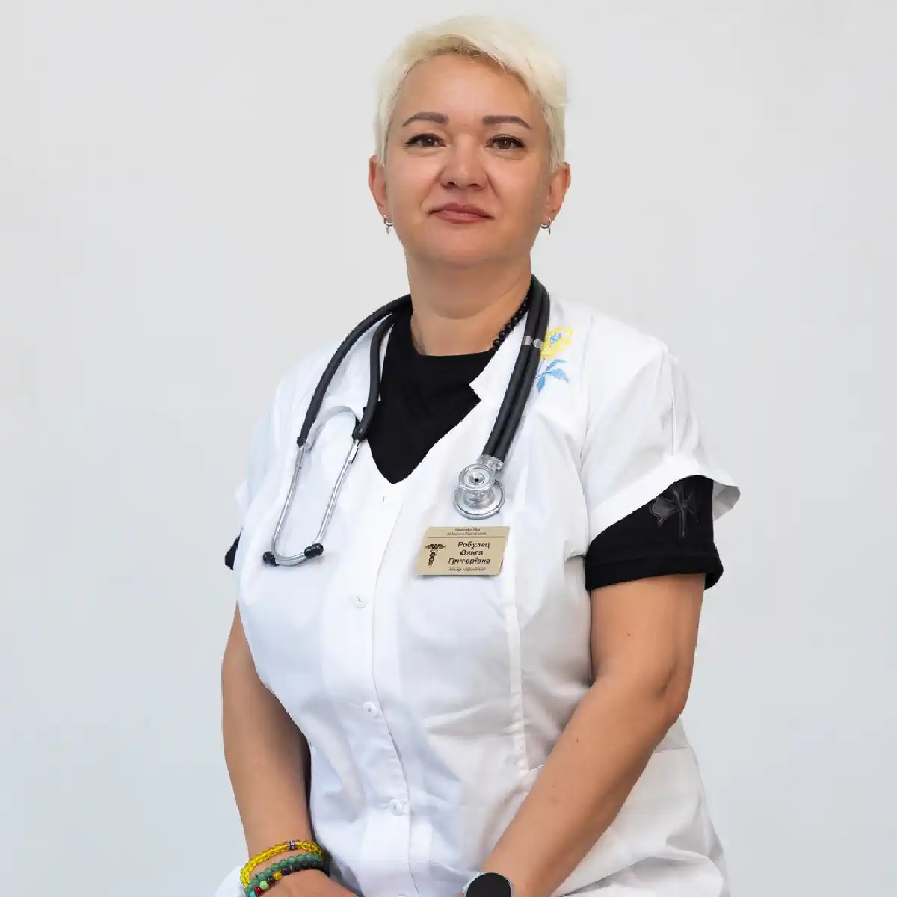

+38(068) 79 72 782
+38(068) 79 72 782Лікування наркотичної залежності від бупренорфіну у Харкові
Допомога після бупренорфіну без зволікання


Безкоштовна консультація, працюємо цілодобово 24/7
Допомога після бупренорфіну без зволікання

Дата написання: 22 вер. 2026 р.
Останнє оновлення: 4 жовт. 2026 р.
Бупренорфін належить до опіоїдів і застосовується в медицині, зокрема для лікування опіоїдної залежності. При правильному призначенні препарат здатний зменшувати тягу до опіоїдів та прояви абстиненції. Водночас тривалий прийом може супроводжуватися фізичною залежністю, а використання препарату не за призначенням лікаря, самостійне збільшення дози або поєднання з іншими психоактивними речовинами підвищують ризик зловживання та ускладнень. У таких ситуаціях може знадобитися лікування наркотичної залежності від бупренорфіну.
При проблемному вживанні людина може дедалі частіше думати про препарат, відчувати виражену тягу, самостійно змінювати призначену дозу або спосіб застосування, використовувати бупренорфін довше або частіше, ніж рекомендував лікар. Можливі спроби отримати препарат із кількох джерел, зниження контролю над кількістю прийнятої речовини та продовження вживання попри сімейні, соціальні або медичні наслідки. При появі подібних ознак рекомендується консультація нарколога. Окремо необхідно враховувати фізичну залежність. Якщо людина тривалий час приймає бупренорфін за призначенням лікаря, розвиток адаптації організму та симптомів відміни після припинення препарату сам по собі ще не означає залежну поведінку.
Бупренорфін впливає на опіоїдні рецептори. При тривалому впливі нервова система адаптується до присутності препарату, внаслідок чого після різкого припинення можуть з’являтися симптоми відміни. Ризик проблемного вживання вищий, якщо препарат використовується без медичного контролю, приймається способом, не передбаченим призначенням, або поєднується з іншими психоактивними речовинами. Водночас при лікуванні опіоїдного розладу тривалий прийом бупренорфіну може бути частиною ефективної терапії. Тому лікування залежності від опіоїдів завжди має будуватися індивідуально, а рішення про зміну терапії приймається лікарем.
Фізична залежність означає, що організм адаптувався до постійного впливу опіоїду та реагує симптомами відміни при припиненні або різкому зниженні дози. Психологічні прояви можуть включати тягу, страх залишитися без препарату, постійні думки про вживання та втрату контролю над поведінкою. Важливо відрізняти ці стани від стабільного медикаментозного лікування опіоїдної залежності. Якщо пацієнт приймає призначену лікарем дозу та дотримується рекомендацій, самостійно припиняти терапію не слід. За сумнівів необхідна консультація нарколога в Харкові.
При тривалому прийомі розвивається адаптація опіоїдної системи організму. Можливі фізична залежність та абстинентні симптоми при різкій відміні. Також можуть з’являтися сонливість, запаморочення, нудота, закреп, підвищена пітливість та порушення сну. Ризики суттєво зростають при одночасному вживанні препарату з алкоголем, бензодіазепінами, седативними засобами та іншими речовинами, що пригнічують центральну нервову систему. При тривалому лікуванні стан пацієнта необхідно періодично оцінювати. Якщо препарат вживається поза призначеною схемою, може знадобитися анонімне лікування наркоманії.
Різке припинення бупренорфіну після тривалого прийому може спричинити опіоїдний абстинентний синдром. Це пов’язано з тим, що організм адаптується до постійного впливу препарату. Вираженість абстиненції залежить від дозування, тривалості прийому, індивідуальних особливостей пацієнта, супутніх захворювань та вживання інших речовин. Тому самостійна різка відміна препарату небажана. За необхідності припинення терапії лікар визначає подальшу тактику та за потреби призначає лікування абстинентного синдрому.
Після припинення препарату можуть виникати тривога, внутрішнє занепокоєння, дратівливість, порушення сну, пітливість, озноб, м’язовий біль, нежить, сльозотеча, розширення зіниць та загальне відчуття дискомфорту. Також можливі нудота, спазми в животі, діарея, зниження апетиту, прискорене серцебиття та виражена тяга до опіоїдів. Інтенсивність проявів значно відрізняється. Якщо симптоми виражені, необхідна наркологічна допомога та медична оцінка стану.
Єдиного терміну абстинентного синдрому не існує. Тривалість залежить від дози препарату, тривалості лікування, особливостей обміну речовин та швидкості зниження дозування. Бупренорфін діє відносно тривало, тому симптоми відміни можуть починатися не одразу після останньої дози. В одних пацієнтів переважають фізичні прояви, в інших довше зберігаються безсоння, тривога, зниження настрою або тяга. Обіцянка зняти всю ломку за одну процедуру є некоректною. Лікування ломки від бупренорфіну підбирається індивідуально.
Якщо препарат приймається за призначенням для лікування опіоїдної залежності, самостійно припиняти терапію не рекомендується. Відміна може призвести не лише до абстинентних симптомів, а й до повернення вживання інших опіоїдів. При проблемному вживанні також бажано звернутися до лікаря. Фахівець з’ясовує дозу, тривалість прийому, наявність інших наркотичних або лікарських речовин та оцінює ризик ускладнень. За потреби можна отримати анонімну консультацію нарколога та скласти індивідуальний план подальшого лікування.
Наркологічна допомога починається з оцінки того, як саме використовується препарат. Важливо визначити, чи призначався бупренорфін лікарем, яку дозу приймає пацієнт, чи були самостійні зміни схеми та чи використовуються одночасно інші опіоїди, алкоголь, бензодіазепіни або психоактивні речовини. Лікар оцінює стан свідомості, пульс, тиск, дихання, ознаки інтоксикації або абстиненції, а також психічний стан пацієнта. Після обстеження визначається подальша тактика: продовження контрольованої терапії, корекція схеми, поступове зниження дози, лікування наркотичної залежності, амбулаторне спостереження або наркологічний стаціонар.
Детоксикація від наркотиків може використовуватися як частина допомоги пацієнту при припиненні проблемного вживання, однак її завдання полягає не в «миттєвому очищенні організму», а в безпечному контролі симптомів та корекції порушень, що виникають. Лікар оцінює водний баланс, загальний стан, вираженість абстиненції та супутні захворювання. За показаннями застосовується симптоматична терапія. Після детоксикації лікування не закінчується. При сформованому опіоїдному розладі необхідно продовжити лікування наркоманії та знизити ризик повернення до вживання.
Інфузійна терапія може застосовуватися за наявності конкретних медичних показань, наприклад при зневодненні або необхідності внутрішньовенного введення призначених препаратів. Крапельниця від наркотиків не є самостійним способом лікування опіоїдної залежності та не здатна автоматично усунути всі прояви абстинентного синдрому. Перед інфузією лікар оцінює стан пацієнта та визначає, чи справді необхідне внутрішньовенне введення розчинів. Склад крапельниці для детоксикації підбирається індивідуально.
Лікування ломки від бупренорфіну спрямоване на зниження вираженості фізичних і психічних проявів відміни та запобігання поверненню до неконтрольованого вживання опіоїдів. Тактика залежить від того, чи приймався бупренорфін у межах лікування, чи використовувався самостійно. Лікар враховує поточну дозу, тривалість вживання та стан пацієнта. У деяких випадках кращим варіантом є поступова корекція терапії замість різкої відміни. Самостійно використовувати інші опіоїди для зменшення ломки небезпечно.
При тривалому вживанні організм адаптується до бупренорфіну. Швидке зниження дози або різке припинення може спричинити опіоїдну абстиненцію. Окрім фізичного дискомфорту, після відміни може посилюватися тяга до інших опіоїдів. Якщо людина повертається до вживання після періоду утримання, зміна толерантності здатна підвищити ризик передозування. Тому перед припиненням препарату рекомендується звернення до нарколога та медична оцінка стану.
В окремих стабільних ситуаціях частина медичної допомоги може проводитися амбулаторно або вдома. Однак попередньо необхідно переконатися, що пацієнт перебуває у стабільному стані та не потребує цілодобового спостереження. Нарколог додому оцінює симптоми абстиненції, дихання, свідомість, артеріальний тиск, супутні захворювання та поєднання з іншими речовинами. Домашній формат не підходить при вираженому пригніченні свідомості або дихання, тяжкій інтоксикації, судомах, значній нестабільності стану або інших ознаках, що потребують екстреної допомоги.
Стаціонар може знадобитися при тяжкому загальному стані, поєднаному вживанні кількох речовин, виражених психічних порушеннях, неможливості контролювати вживання або необхідності постійного медичного спостереження. Окремої уваги потребують пацієнти, які одночасно вживають бупренорфін, алкоголь, бензодіазепіни або інші препарати, здатні пригнічувати центральну нервову систему. У таких ситуаціях лікування в наркологічному стаціонарі дозволяє забезпечити ретельніше спостереження та своєчасно коригувати терапію.
Наркологічний стаціонар дозволяє цілодобово контролювати стан пацієнта, проводити необхідне обстеження та коригувати лікування залежно від динаміки симптомів. В умовах стаціонару лікар може контролювати абстинентні прояви, сон, тривогу, артеріальний тиск, пульс та інші показники. Після стабілізації формується подальший план лікування. Він може включати медикаментозну терапію, психотерапію та реабілітацію наркозалежних.
Медикаментозна стабілізація вирішує не всі проблеми, пов’язані із залежною поведінкою. Якщо у пацієнта сформувався розлад, пов’язаний із вживанням опіоїдів, важливою частиною лікування стає психотерапевтична допомога. Робота спрямована на виявлення ситуацій, що провокують вживання, формування навичок контролю тяги, зміну звичних моделей поведінки та профілактику зриву. Психотерапія при наркотичній залежності підбирається індивідуально з урахуванням історії вживання та психічного стану пацієнта.
Реабілітація наркозалежних спрямована на підтримання досягнутого результату та повернення пацієнта до стабільного повсякденного життя. Програма може включати індивідуальну та групову психотерапію, роботу з мотивацією, відновлення соціальних зв’язків та навчання стратегіям поведінки при появі тяги. Тривалість реабілітації залежить від вираженості залежності, тривалості вживання, супутніх психічних порушень та ризику повторного вживання.
Вартість лікування залежності від бупренорфіну в Харкові починається від 2499 грн.
Одночасне вживання бупренорфіну та алкоголю підвищує ризик вираженої сонливості, порушення свідомості та пригнічення дихання. Обидві речовини здатні чинити пригнічувальну дію на центральну нервову систему. Якщо після поєднання бупренорфіну з алкоголем людину неможливо нормально розбудити, дихання стало рідкісним або поверхневим, необхідно негайно звертатися за екстреною медичною допомогою. Якщо проблема пов’язана не лише з опіоїдами, а й із тривалим вживанням алкоголю, після стабілізації стану може знадобитися виведення із запою вдома в Харкові або подальше лікування алкоголізму.
Бензодіазепіни в поєднанні з опіоїдами здатні значно збільшувати ризик вираженої седації, пригнічення дихання, коми та інших тяжких ускладнень. Водночас пацієнтам, які отримують бупренорфін для лікування опіоїдної залежності та одночасно приймають призначені бензодіазепіни, не слід самостійно припиняти терапію. При вираженій сонливості, сплутаності свідомості або порушеннях дихання необхідна термінова наркологічна допомога або виклик екстреної медичної служби.
При передозуванні можливі виражена сонливість, різке зниження реакції на оточення, порушення свідомості та уповільнене або утруднене дихання. Ризик особливо високий при поєднанні бупренорфіну з алкоголем, бензодіазепінами та іншими засобами, що пригнічують центральну нервову систему. Якщо людину неможливо розбудити, вона перестала нормально дихати, з’явився синюшний колір губ, втрата свідомості або інші ознаки тяжкої опіоїдної інтоксикації, необхідна екстрена допомога при передозуванні наркотиками.
Налоксон застосовується при опіоїдному передозуванні та здатний блокувати дію опіоїдів на рецептори. При підозрі на передозування його застосування не повинно замінювати виклик екстреної медичної допомоги. Після введення налоксону необхідно продовжувати спостерігати за диханням та свідомістю людини до прибуття медиків. Навіть після початкового покращення може знадобитися подальше спостереження в наркологічному стаціонарі.
Анонімне лікування наркоманії дозволяє отримати консультацію фахівця, пройти оцінку стану та визначити подальшу тактику терапії. На прийомі важливо повідомити лікарю реальне дозування препарату, тривалість вживання, спосіб прийому та всі інші речовини, які вживалися одночасно. Ці відомості необхідні для безпечного вибору лікування. Після первинної стабілізації пацієнту можуть бути запропоновані лікування наркотичної залежності, психотерапія та реабілітація наркозалежних.
Універсальної тривалості лікування немає. Якщо завдання полягає лише в контролі гострого абстинентного синдрому, один етап терапії може бути обмеженим у часі, однак робота зі сформованим опіоїдним розладом потребує тривалішого спостереження. Якщо бупренорфін спочатку був призначений як засіб лікування опіоїдної залежності, терапія може тривати довго. Рішення про припинення препарату приймається індивідуально, а не за заздалегідь встановленим терміном. Головна мета лікування залежності від бупренорфіну — не просто припинити прийом препарату, а досягти стабільного стану, знизити тягу, запобігти поверненню до небезпечного вживання інших опіоїдів та підтримати тривале відновлення.
Телефон для консультації та виклику нарколога додому в Харкові: +38(050-021-69-57)

Статтю перевірено експертом
Могучев Станіслав
Лікар-терапевт, ординатор
Можливо цікава стаття:
Як очиститися від наркотиків — дієві поради

Так, ми суворо дотримуємося повної конфіденційності на всіх етапах лікування. Інформація про пацієнта, діагноз та проходження терапії не передається третім особам. Звернення до нас не тягне за собою постановку на облік. Ви можете бути впевнені у безпеці та анонімності.
Програма лікування розробляється індивідуально після консультації з фахівцем. Враховуються вид залежності, її тривалість, фізичний та психологічний стан пацієнта. Такий підхід дозволяє підвищити ефективність терапії та знизити ризик зриву. Ми не використовуємо шаблонні рішення.
Так, ми супроводжуємо пацієнтів і після основного курсу лікування. Проводяться консультації, рекомендації щодо адаптації та профілактики рецидивів. За потреби можлива подальша психологічна підтримка. Це допомагає зберегти результат та повернутися до повноцінного життя.
Анонимно

Помогли при наркотической зависимости
Номер телефону:
+380 (68) 797 27 82
+380 (50) 021 69 57
Адресу наркологічного центра вашого міста уточнюйте за
телефоном
Працюємо: Київ, Одеса, Львів, Харків, Дніпро, Запоріжжя,
Черкасах, Чугуєві, Чорноморську, Кам'янському
Telegram: t.me/umbrellaplus
Графік работы: Цілодобово